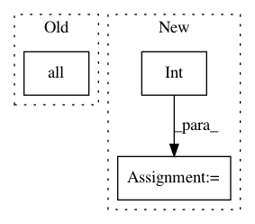

cc31d7f56d6cd8569a5f7b47c254d89a85e8691b,skimage/transform/pyramids.py,,pyramid_laplacian,#Any#Any#Any#Any#Any#Any#Any#Any#,215
Before Change
current_shape = np.asarray(resized_image.shape)
// no change to previous pyramid layer
if np.all(current_shape == prev_shape):
break
yield resized_image - smoothed_image
After Change
// build downsampled images until max_layer is reached or downscale process
// does not change image size
if max_layer == -1:
max_layer = int(np.ceil(math.log(np.max(current_shape), downscale)))
for layer in range(max_layer):
out_shape = tuple(
[math.ceil(d / float(downscale)) for d in current_shape])
if multichannel:
out_shape = out_shape[:-1]
resized_image = resize(smoothed_image, out_shape,
order=order, mode=mode, cval=cval)
smoothed_image = _smooth(resized_image, sigma, mode, cval,
multichannel)
current_shape = np.asarray(resized_image.shape)
yield resized_image - smoothed_image
In pattern: SUPERPATTERN
Frequency: 3
Non-data size: 3
Instances
Project Name: scikit-image/scikit-image
Commit Name: cc31d7f56d6cd8569a5f7b47c254d89a85e8691b
Time: 2017-04-17
Author: grlee77@gmail.com
File Name: skimage/transform/pyramids.py
Class Name:
Method Name: pyramid_laplacian
Project Name: geomstats/geomstats
Commit Name: d78c2945c7a52d93e7f158dc0c6e6b6465cb1657
Time: 2020-04-23
Author: nicolas.guigui@inria.fr
File Name: geomstats/learning/preprocessing.py
Class Name: ToTangentSpace
Method Name: inverse_transform
Project Name: scikit-image/scikit-image
Commit Name: 7d70b5e7dd1f5e33326cb50b339aa0b5c13073c4
Time: 2020-02-19
Author: mail@uweschmidt.org
File Name: skimage/segmentation/_join.py
Class Name:
Method Name: relabel_sequential